Lanzacohetes
Misiles que persiguen al enemigo.
Arsenal de Akira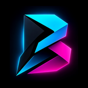
BARKARUMUn juego de Barkarum Project Studio
En desarrollo Acción run-and-gun 2.5D
«Una escapó. Va por las otras tres.»
Akira es la única de cuatro amigas que escapó de CERBERUS. Ahora va misión por misión a rescatar a las otras tres.
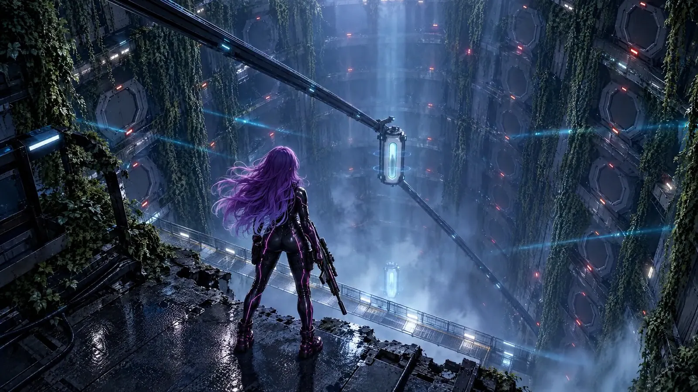
CERBERUS · Sala de cápsulas Objetivo: rescate Arte de cinemática01 La historia
Akira, Rei, Kaede y Yumi estudiaban informática y trabajaban en tecnología para la medicina, la biología y la botánica. La primera generación de unos tratamientos nuevos mejoró la salud de la gente; la siguiente trae nanobots que imponen obediencia. Cuando intentaron denunciarlo, Rei, Kaede y Yumi fueron capturadas. Akira escapó.
Ahora tiene nueve meses para impedir que esos tratamientos se fabriquen y lleguen a la Tierra. Enfrente está CERBERUS, el aparato que lo custodia todo: prisiones, fábricas, tropas, drones y colosos.
02 Misión 01 · Antes de la misión
Akira, Rei, Kaede y Yumi estudiaban informática y trabajaban juntas en tecnología para la medicina, la biología y la botánica; Akira era la experta del grupo en sistemas seguros y privacidad. Antes de su primera misión pasaron una noche en el laboratorio diseñando sus armaduras, se las pusieron pieza por pieza, probaron sus armas de energía y salieron juntas, como equipo.
03 Misión 02 · La batalla
Una noche de lluvia, una plaza industrial y filas de androides de combate que encienden sus ojos rojos. Akira, Rei, Kaede y Yumi pelean juntas, cada una con su arma de energía, al ritmo de la canción de la Misión 02 de la banda sonora original.
04 Jefe · El coloso
En una caverna bajo la ciudad, un coloso de acero se levanta y barre el suelo con los rayos de sus ojos. Akira lo enfrenta sola con VENDAVAL, la ametralladora rotativa acoplada a su traje, al ritmo de un tema de jefe de la banda sonora original.
05 Cómo se juega
06 La protagonista
Gira el modelo con el dedo o el mouse.
Arrastra para girar
Experta en sistemas seguros y privacidad, y por eso la única que escapó. Traje táctico negro con costuras magenta y cabello violeta: el magenta es su color.
Modelo 3D del juego07 Arsenal
Misiles que persiguen al enemigo.
Arsenal de AkiraAmetralladora rotativa que se acopla al traje.
En desarrolloEmisor de plasma que salta de un androide a otro.
En desarrollo08 Galería
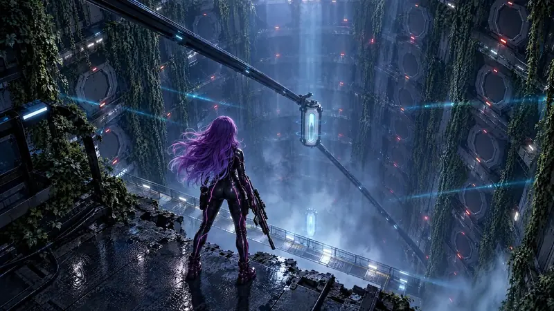
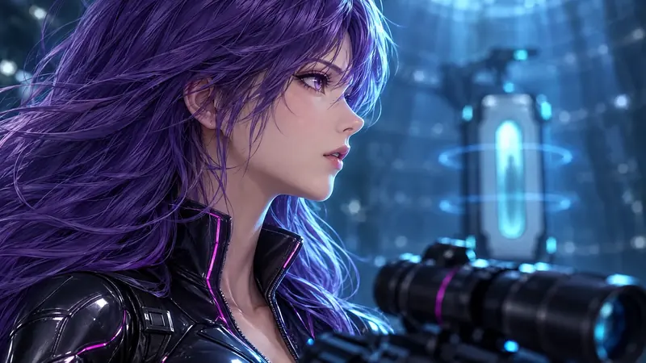
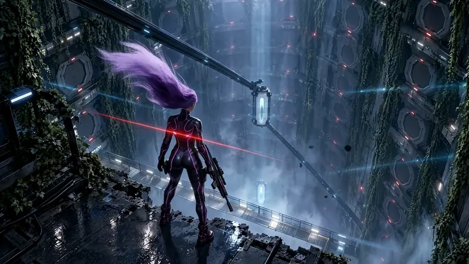
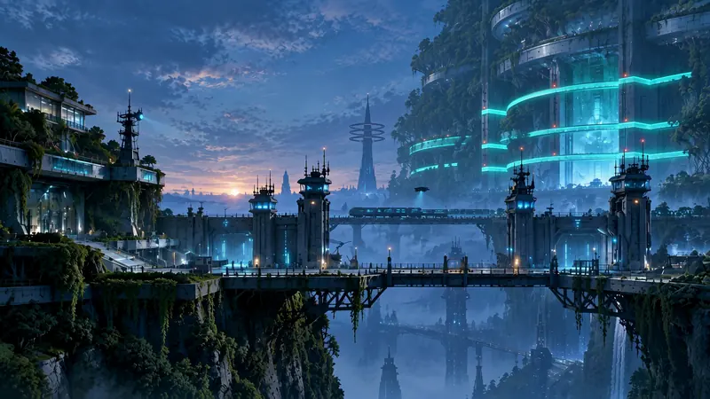
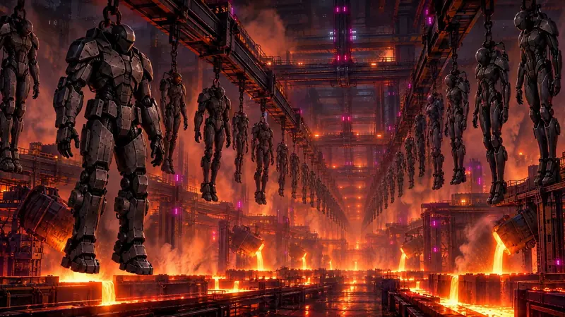
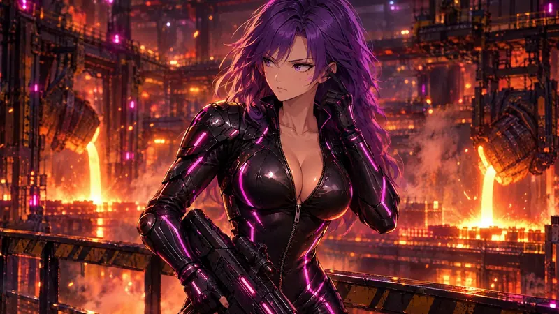
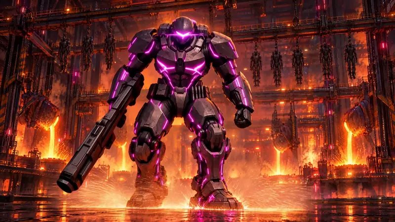
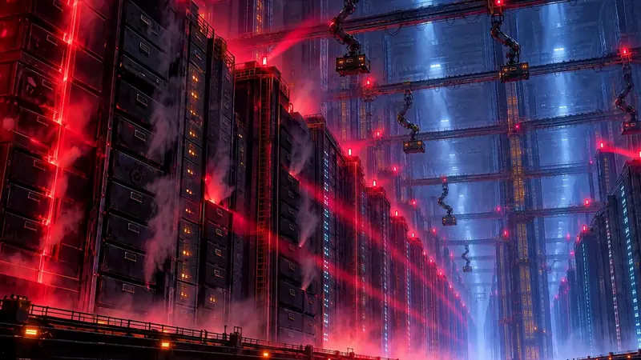
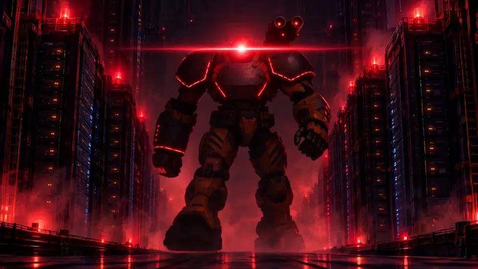
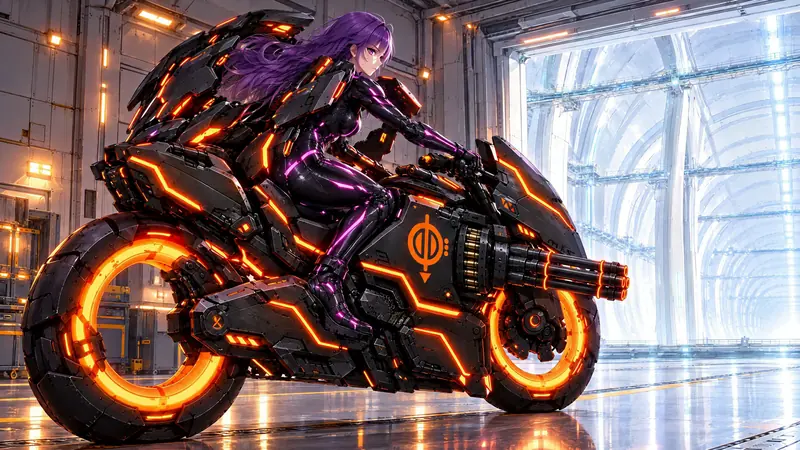
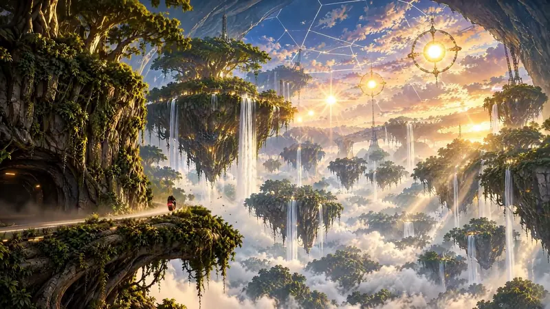
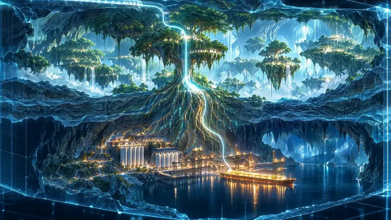
Las imágenes de Barkarum Project salen de las cinemáticas del juego, no de partidas.
09 Ficha
Los avances de Barkarum Project se publican primero en X.